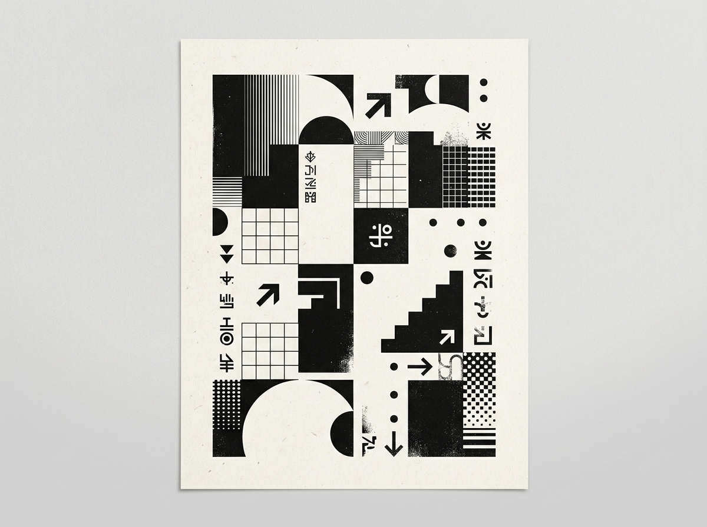

Obra
Disciplina
Investigación en artes visuales y sistemas generativos: un espacio de experimentación con tecnologías emergentes y herramientas algorítmicas para nuevas inteligencias visuales.

Artes Visuales & Sistemas Generativos
AISUNI es un espacio de investigación en artes visuales y sistemas generativos. Exploramos las fronteras entre el cálculo formal, las herramientas algorítmicas emergentes y la poética de la forma pura. Entendemos el código como una materia plástica viva capaz de revelar patrones botánicos, dinámicas físicas acústicas y nuevas inteligencias visuales.
Nuestra práctica se articula en torno a la síntesis: convertir la complejidad caótica de datos científicos, sonidos o axiomas matemáticos en artefactos visuales directos, rigurosos y contemplativos. Desarrollamos herramientas propias, shaders GLSL, tipografía paramétrica y tramas vectoriales diseñadas para habitar tanto pantallas de alta resolución como piezas físicas impresas y trazadores mecánicos.
Mozilla Fest: Expanding the Generative Map
Sottotraccia Festival: Painting with Sound
Flexible Visual Systems: Framora Generative Architecture
Disponible para proyectos de sistemas generativos, visualización de datos complejos, tipografía algorítmica y dirección de arte computacional.